Read and preprocess the source data
Read raw discharge data
The starting point for hydrograph analysis is to obtain the source data. Let’s see how it goes with sample spas-zagorye.txt discharge data for \(1956-2020\) year range provided with grwat. This data is for Spas-Zogorye gauge on Protva river in Central European plane:
library(sf) # reading and manipulating spatial data
library(tidyverse) # general data wrangling
library(mapview) # interactive mapping of spatial data
library(ecmwfr) # this is to access ERA5 reanalysis data
library(grwat)
mapviewOptions(fgb = FALSE)
# this is path to sample data installed with grwat
path = system.file("extdata", "spas-zagorye.txt", package = "grwat")
# for your own data just provide the full path:
# path = /this/is/the/path/to/discharge/discharge.csv
hdata = read_delim(path, col_names = c('d', 'm', 'y', 'q'), col_types = 'iiid', delim = ' ') # read gauge data
head(hdata) # see the data
#> # A tibble: 6 x 4
#> d m y q
#> <int> <int> <int> <dbl>
#> 1 1 1 1956 5.18
#> 2 2 1 1956 5.18
#> 3 3 1 1956 5.44
#> 4 4 1 1956 5.44
#> 5 5 1 1956 5.44
#> 6 6 1 1956 5.58This example contains the minimum amount of data needed to use the grwat. The first three columns encode the date, and the last column is the main variable — discharge. If the date is encoded as a single column instead of three separate columns, this is also perfect for grwat as input:
Join meteorological variables
A sole discharge data is enough to separate the hydrograph into quickflow and baseflow, but is not sufficient to predict the genesis of quickflow cases. Was it due to rain or thaw? To answer such questions you also need precipitation and temperature data. Ideally, these must be measured at the gauge. But often such data is not available. In this case you need to mine this data from external sources.
One of the ways to obtain the temperature and precipitation data is to use reanalyses such as ERA5. Reanalysis data is arranged as regular grids with specific resolution. In particular, the ERA5 data has \(31\) km or \(0.28125\) degrees resolution. To use such data you must tolerate the fact that none of the reanalysis grid nodes will coincide with your gauge. Instead, you have to use the data, which is either
- the closest reanalysis point
- all points falling within the buffer zone of the gauge
- all points falling within the basin of the the gauge.
- all points falling within the buffer zone of the basin of the the gauge.
The last two options are the most adequate. Let’s see how it can be done.
Basin, buffered basin or buffered gauge
First, we need to read the basin spatial data:
# this is path to sample basin geopackage installed with grwat
path = system.file("extdata", "spas-zagorye.gpkg", package = "grwat")
# for your own data just provide the full path:
# path = /this/is/the/path/to/discharge/basin.shp
basin = st_read(path, layer = 'basin') # read basin region
#> Reading layer `basin' from data source `/private/var/folders/5s/rkxr4m8j24569d_p6nj9ld200000gn/T/RtmpNilAIo/temp_libpath1362e34590714/grwat/extdata/spas-zagorye.gpkg' using driver `GPKG'
#> Simple feature collection with 1 feature and 7 fields
#> Geometry type: MULTIPOLYGON
#> Dimension: XY
#> Bounding box: xmin: 35.41204 ymin: 54.88195 xmax: 36.84138 ymax: 55.57005
#> Geodetic CRS: WGS 84
mapview(basin)Next, we can buffer the data on the specified distance to catch more reanalysis data:
basin_buffer = gr_buffer_geo(basin, 25000)
mapview(basin_buffer, col.regions = 'red') +
mapview(basin)Alternatively you can just buffer the gauge point, though it is less meaningful since you will grab reanalysis data that falls out of gauge’s basin:
gauge = st_read(path, layer = 'gauge') # read gauge point
#> Reading layer `gauge' from data source `/private/var/folders/5s/rkxr4m8j24569d_p6nj9ld200000gn/T/RtmpNilAIo/temp_libpath1362e34590714/grwat/extdata/spas-zagorye.gpkg' using driver `GPKG'
#> Simple feature collection with 1 feature and 0 fields
#> Geometry type: POINT
#> Dimension: XY
#> Bounding box: xmin: 36.62272 ymin: 55.03669 xmax: 36.62272 ymax: 55.03669
#> Geodetic CRS: WGS 84
gauge_buffer = gr_buffer_geo(gauge, 50000)
mapview(gauge_buffer, col.regions = 'red') +
mapview(gauge)Finally, you need the bounding box of your buffer to query the data:
box = st_bbox(basin_buffer)
box
#> xmin ymin xmax ymax
#> 35.01727 54.65594 37.23450 55.79392Joining the East-European Plane reanalysis
grwat is packaged with daily reanalysis which covers the East European territory of Russia:

The reanalysis consists of two data files, each is about 850 Mb in size:

Download this data using the FTP link for using with grwat.
rean = gr_read_rean('/Volumes/Data/Spatial/Reanalysis/grwat/pre_1880-2021.nc',
'/Volumes/Data/Spatial/Reanalysis/grwat/temp_1880-2021.nc') # read reanalysis data
hdata_rean = gr_join_rean(hdata, rean, basin_buffer) # join reanalysis data to hydrological series
#> although coordinates are longitude/latitude, st_intersects assumes that they are planar
#> although coordinates are longitude/latitude, st_intersects assumes that they are planar
#> Joining, by = c("Year", "Month", "Day")
head(hdata_rean$df)
#> Day Month Year Q Temp Prec
#> 1 1 1 1956 5.18 -6.46 0.453
#> 2 2 1 1956 5.18 -11.41 0.825
#> 3 3 1 1956 5.44 -10.74 0.260
#> 4 4 1 1956 5.44 -8.05 0.397
#> 5 5 1 1956 5.44 -11.73 0.102
#> 6 6 1 1956 5.58 -20.13 0.032After reanalysis data are joined you can easily plot a map of the derived spatial configuration with
gr_map(rean$pts, hdata_rean$pts, basin, basin_buffer) # plot spatial configuration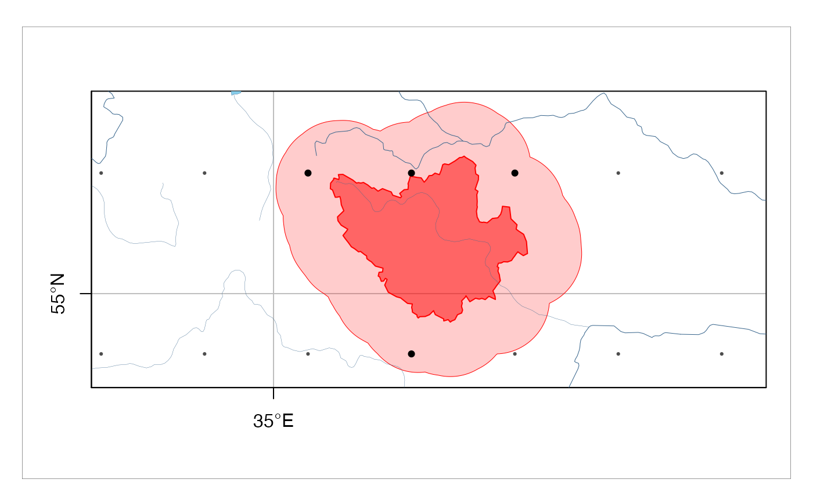
Separate and describe
The first stage before separation is to fill the gaps. You can limit the maximum gap extent by treshold autocorrelation value (autocorr parameter) or explitit number of observations (nobserv parameter):
tab = gr_fill_gaps(hdata_rean$df,
autocorr = 0.7)
#> grwat: filled 0 observations using 5 days windowThe second step is to derive and set separation parameters:
# Расчленение
p = gr_get_params()
p$nPav = 5
p$prodspada = 85Next, you can separate the hydrograph
sep = gr_separate(tab, p)
head(sep)
#> Date Qin Qbase Quick Qseas Qrain Qthaw Qpb Qtype Temp Prec
#> 1 1956-01-01 5.2 5.2 0 0 0 0 0 0 -6.5 0.5
#> 2 1956-01-02 5.2 5.2 0 0 0 0 0 0 -11.4 0.8
#> 3 1956-01-03 5.4 5.4 0 0 0 0 0 0 -10.7 0.3
#> 4 1956-01-04 5.4 5.4 0 0 0 0 0 0 -8.1 0.4
#> 5 1956-01-05 5.4 5.4 0 0 0 0 0 0 -11.7 0.1
#> 6 1956-01-06 5.6 5.6 0 0 0 0 0 0 -20.1 0.0Finally, summarize the interannual changes:
vars = gr_summarize(sep)
head(vars)
#> # A tibble: 6 x 57
#> Year Year1 Year2 datestart datepolend PolProd Qy Qmax datemax Qygr
#> <int> <int> <dbl> <date> <date> <int> <dbl> <dbl> <date> <dbl>
#> 1 1956 1956 1957 1956-04-08 1956-05-02 24 18.3 467 1956-04-22 7.83
#> 2 1957 1957 1958 1957-03-31 1957-05-01 31 20.3 460 1957-04-08 8.02
#> 3 1958 1958 1959 1958-04-06 1958-05-06 30 27.4 537 1958-04-21 8.28
#> 4 1959 1959 1960 1959-03-31 1959-04-27 27 27.1 406 1959-04-16 7.60
#> 5 1960 1960 1961 1960-03-30 1960-04-26 27 29.5 406 1960-04-15 9.45
#> 6 1961 1961 1962 1961-03-12 1961-04-14 33 18.8 296 1961-04-10 9.81
#> # … with 47 more variables: Qmmsummer <dbl>, monmmsummer <date>, Qmmwin <dbl>,
#> # nommwin <date>, Q30s <dbl>, date30s1 <date>, date30s2 <date>, Q30w <dbl>,
#> # date30w1 <date>, date30w2 <date>, Q10s <dbl>, date10s1 <date>,
#> # date10s2 <date>, Q10w <dbl>, date10w1 <date>, date10w2 <date>, Q5s <dbl>,
#> # date5s1 <date>, date5s2 <date>, Q5w <dbl>, date5w1 <date>, date5w2 <date>,
#> # Wy <dbl>, Wgr <dbl>, Wpol2 <dbl>, Wpol1 <dbl>, Wpol3 <dbl>, Wpavs2 <dbl>,
#> # Wpavs1 <dbl>, Wpavthaw2 <dbl>, Wpavthaw1 <dbl>, WgrS <dbl>, WS <dbl>,
#> # WgrW <dbl>, WW <dbl>, Qmaxpavs <dbl>, Qmaxpavthaw <dbl>,
#> # datemaxpavs <date>, datemaxpavthaw <date>, SumProd <int>,
#> # DaysPavsSum <int>, WinProd <int>, DaysThawWin <int>, CvWin <dbl>,
#> # CvSum <dbl>, CountPavs <int>, CountThaws <int>Plot and test
These functions from grwat package allow you to:
- Plot separation of hydrograph
- Plot interannual changes of key water discharge variables
- Plot long-term changes of key water discharge variables
- Perform statistical tests on all calculated variables
Plot separation of hydrograph
You can plot separations for selected years using gr_plot_sep() function:
gr_plot_sep(sep, 1979) # plot single year
#> Warning: Removed 36 rows containing missing values (position_stack).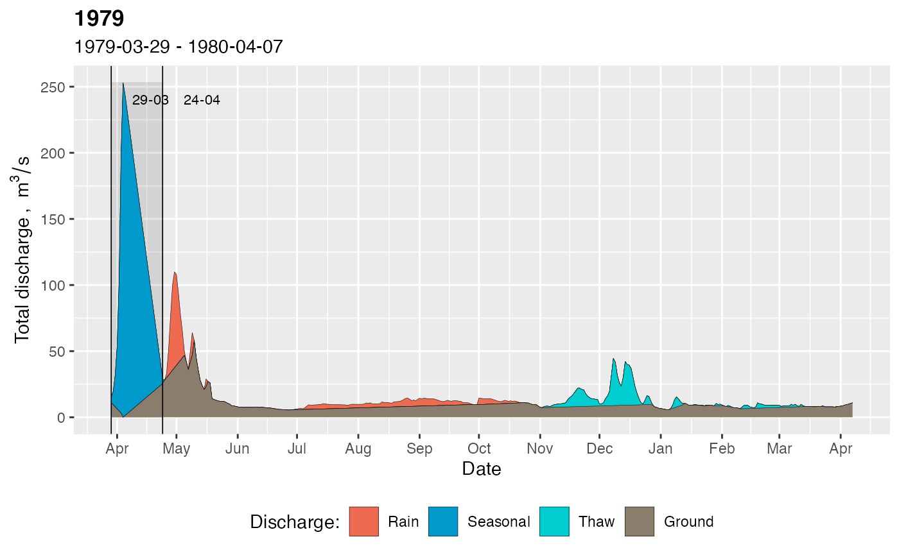
gr_plot_sep(sep, c(1994, 2001)) # plot two years sequentially
#> Warning: Removed 24 rows containing missing values (position_stack).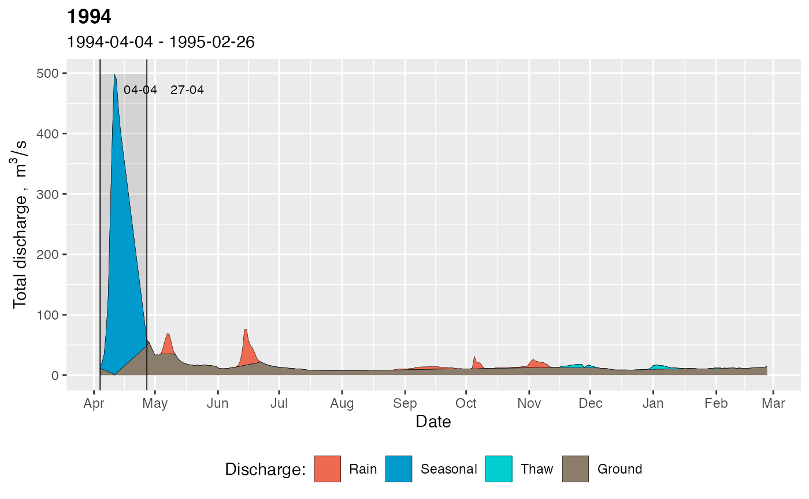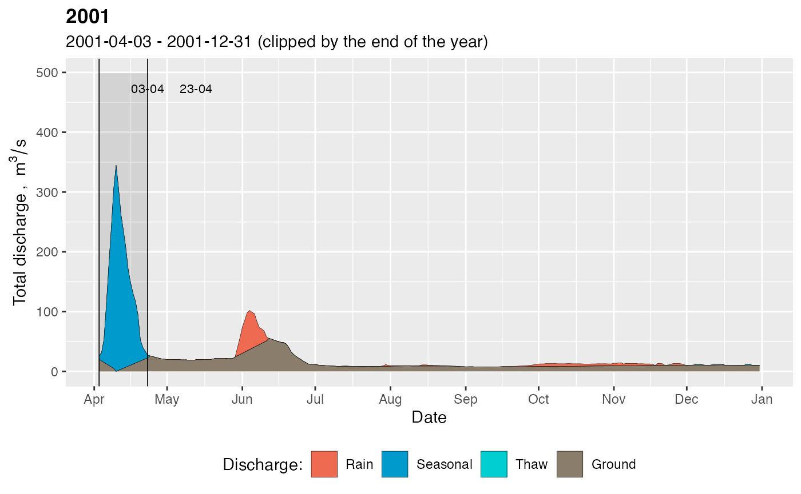
gr_plot_sep(sep, 1994:1997, # plot four years on the same page
layout = matrix(c(1,2,3,4), nrow=2, byrow=TRUE))
#> Warning: Removed 24 rows containing missing values (position_stack).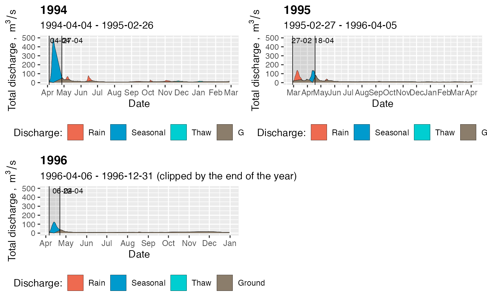
Interannual change variables
To get the detailed description of available variables you can invoke get_parameters():
gr_help_vars()
#> # A tibble: 57 x 19
#> ID Position Width Source Name Units Unitsen Readtype Type Test Desc
#> <dbl> <dbl> <dbl> <dbl> <chr> <chr> <chr> <chr> <chr> <dbl> <chr>
#> 1 1 1 7 1 year_… <NA> <NA> integer inte… 0 Номер …
#> 2 2 8 10 1 Year1 Год Year integer inte… 0 Год, к…
#> 3 3 18 10 1 Year2 Год Year integer inte… 0 Год, к…
#> 4 4 28 15 1 dates… Дата Date Date Date 1 Дата н…
#> 5 5 43 15 1 datep… Дата Date Date Date 1 Дата о…
#> 6 57 0 0 0 PolPr… Дней Days integer inte… 1 Продол…
#> 7 6 58 10 1 Qy м^3/с m^3/s double doub… 1 Средни…
#> 8 7 68 10 1 Qmax м^3/с m^3/s double doub… 1 Максим…
#> 9 8 78 15 1 datem… Дата Date Date Date 1 Дата м…
#> 10 9 93 10 1 Qygr м^3/с m^3/s double doub… 1 Средни…
#> # … with 47 more rows, and 8 more variables: Descen <chr>, Group <chr>,
#> # Winter <dbl>, Chart <chr>, Color <chr>, Order <dbl>, Range <chr>,
#> # Problems <chr>Parameters can be statistically tested using test_variables(df, ..., year = NULL, locale='EN') function. Names of the parameters are passed comma-separated in place of .... They are quoted, so you do not need to pass them as character strings, just write their names:
gr_test_vars(vars, Qmax)
#> Warning: `select_()` was deprecated in dplyr 0.7.0.
#> Please use `select()` instead.
#> $ptt
#> $ptt$Qmax
#>
#> Pettitt's test for single change-point detection
#>
#> data: vl[vl_cmp]
#> U* = 479, p-value = 0.01136
#> alternative hypothesis: two.sided
#> sample estimates:
#> probable change point at time K
#> 15
#>
#>
#>
#> $mkt
#> $mkt$Qmax
#>
#> Mann-Kendall trend test
#>
#> data: vl[vl_cmp]
#> z = -3.3665, n = 64, p-value = 0.0007612
#> alternative hypothesis: true S is not equal to 0
#> sample estimates:
#> S varS tau
#> -582.000000 29784.000000 -0.289265
#>
#>
#>
#> $tst
#> $tst$Qmax
#>
#> Sen's slope
#>
#> data: values[fltr]
#> z = -3.3665, n = 64, p-value = 0.0007612
#> alternative hypothesis: true z is not equal to 0
#> 95 percent confidence interval:
#> -5.400000 -1.518519
#> sample estimates:
#> Sen's slope
#> -3.455218
#>
#>
#>
#> $ts_fit
#> $ts_fit$Qmax
#>
#> Call:
#> mblm::mblm(formula = eval(frml), dataframe = df.theil[fltr, ],
#> repeated = FALSE)
#>
#> Coefficients:
#> (Intercept) Year1
#> 7119.899 -3.455
#>
#>
#>
#> $tt
#> $tt$Qmax
#>
#> Welch Two Sample t-test
#>
#> data: d1 and d2
#> t = 3.6374, df = 19.052, p-value = 0.001747
#> alternative hypothesis: true difference in means is not equal to 0
#> 95 percent confidence interval:
#> 74.24934 275.41809
#> sample estimates:
#> mean of x mean of y
#> 419.7857 244.9520
#>
#>
#>
#> $ft
#> $ft$Qmax
#>
#> F test to compare two variances
#>
#> data: d1 and d2
#> F = 1.2832, num df = 13, denom df = 49, p-value = 0.51
#> alternative hypothesis: true ratio of variances is not equal to 1
#> 95 percent confidence interval:
#> 0.588173 3.525265
#> sample estimates:
#> ratio of variances
#> 1.283207
#>
#>
#>
#> $year
#> Qmax
#> 1970
#>
#> $maxval
#> $maxval$Qmax
#> [1] 780
#>
#>
#> $fixed_year
#> [1] FALSE
#>
#> $pvalues
#> N Variable Change.Year Trend
#> 1 1 Maximum annual discharge during seasonal flood wave 1970 -3.45522
#> M1 M2 MeanRatio sd1 sd2 sdRatio Mann.Kendall Pettitt
#> 1 419.7857 244.952 -41.6 162.9446 143.844 -11.7 0.00076 0.01136
#> Student Fisher
#> 1 0.00175 0.51001This is an example with three variables selected:
tests = gr_test_vars(vars, Qygr, date10w1, Wpol3)
tests$pvalues
#> N Variable
#> 1 1 Annual groundwater discharge ("baseflow") during water-resources year
#> 2 2 First date of 10-day window discharge during winter
#> 3 3 Seasonal flood runoff (with groundwater and rainwater)
#> Change.Year Trend M1 M2 MeanRatio sd1 sd2 sdRatio
#> 1 1977 0.10789 7.55548 13.13746 73.9 1.56682 2.32940 48.7
#> 2 1989 0.97421 22-Apr 10-Jun 49.0 133.00000 150.00000 12.8
#> 3 1989 -0.11508 10.30174 6.21861 -39.6 5.35720 3.76726 -29.7
#> Mann.Kendall Pettitt Student Fisher
#> 1 0.00000 0.00000 0.0000 0.05866
#> 2 0.47594 0.59462 0.1712 0.49666
#> 3 0.00031 0.00545 0.0009 0.05696If you want to test all parameters, just skip variable names:
tests = gr_test_vars(vars)
tests$year # this is a change year detected for each variable
#> Wy Wpol2 Wgr Wpol1 Wpavs2
#> 1978 1974 1977 1989 1969
#> Wpavs1 Wpavthaw2 Wpavthaw1 WgrW WW
#> 1977 2005 1977 1978 1978
#> WgrS WS Qy datestart Qygr
#> 1977 1977 1978 1995 1977
#> datepolend PolProd Qmax datemax Wpol3
#> 1976 1989 1970 1970 1989
#> Qmmwin nommwin Qmmsummer monmmsummer Q30w
#> 1979 1964 1979 1990 1979
#> date30w1 Q30s date30s1 Q10w date10w1
#> 1977 1979 2000 1979 1989
#> Q10s date10s1 Q5w date5w1 Q5s
#> 1981 2000 1979 1998 1981
#> date5s1 Qmaxpavthaw datemaxpavthaw CountThaws DaysThawWin
#> 2000 1995 1993 1969 1984
#> Qmaxpavs datemaxpavs CountPavs DaysPavsSum CvWin
#> 1960 1965 1991 1970 1999
#> WinProd CvSum SumProd
#> 1968 1991 1988Long-term changes are tested against breaking year, which is calculated for each variable using Pettitt test. However, if you want to use a fixed year, you should pass the desired breaking year into change_year parameter:
tests = gr_test_vars(vars, Qmax, Qygr, change_year = 1987)
tests$ft # Fisher F tests to compare two variances
#> $Qmax
#>
#> F test to compare two variances
#>
#> data: d1 and d2
#> F = 1.2832, num df = 13, denom df = 49, p-value = 0.51
#> alternative hypothesis: true ratio of variances is not equal to 1
#> 95 percent confidence interval:
#> 0.588173 3.525265
#> sample estimates:
#> ratio of variances
#> 1.283207
#>
#>
#> $Qygr
#>
#> F test to compare two variances
#>
#> data: d1 and d2
#> F = 0.45242, num df = 20, denom df = 42, p-value = 0.05866
#> alternative hypothesis: true ratio of variances is not equal to 1
#> 95 percent confidence interval:
#> 0.220710 1.030786
#> sample estimates:
#> ratio of variances
#> 0.4524249Plot interannual changes
Interannual changes are visualized using gr_plot_vars() function. Its syntax is similar to gr_test_vars() and gr_plot_sep():
gr_plot_vars(vars, Qmax) # plot one selected variable
gr_plot_vars(vars, date10w1, Wpol3) # plot two variables sequentially
#> Warning: Removed 20 rows containing non-finite values (stat_smooth).
#> Warning: Removed 20 rows containing missing values (geom_point).
#> Warning: Removed 2 row(s) containing missing values (geom_path).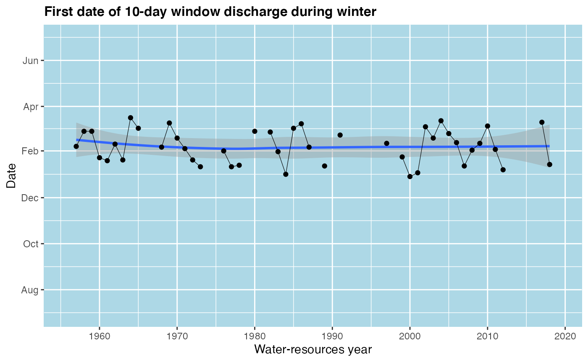
#> Warning: Removed 1 rows containing non-finite values (stat_smooth).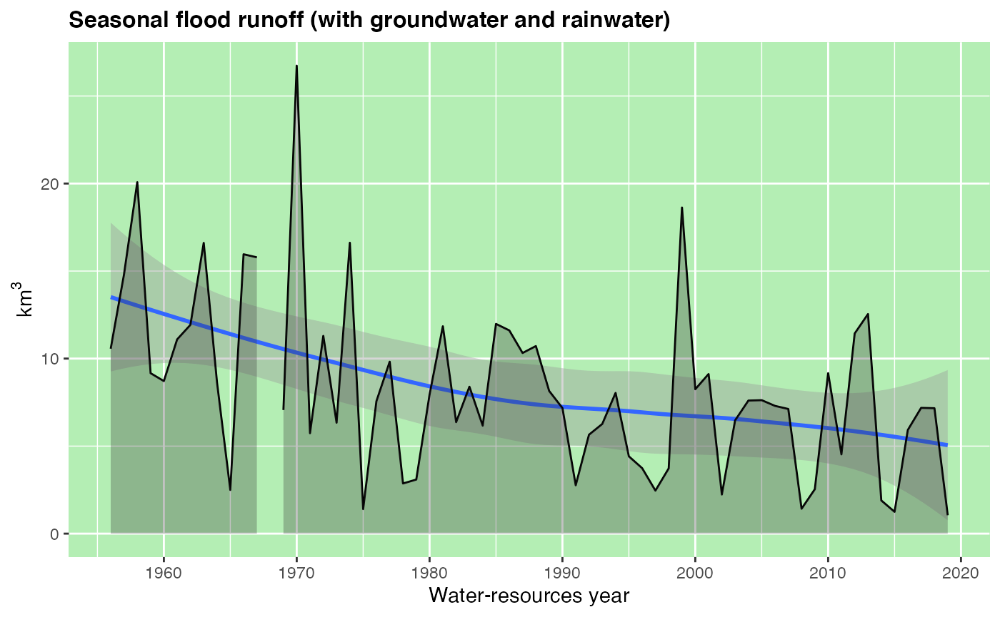
gr_plot_vars(vars, Qmax, Qygr, date10w1, Wpol3, # plot four variables in matrix layout
layout = matrix(c(1,2,3,4), nrow=2, byrow=TRUE))
#> Warning: Removed 20 rows containing non-finite values (stat_smooth).
#> Warning: Removed 20 rows containing missing values (geom_point).
#> Warning: Removed 2 row(s) containing missing values (geom_path).
#> Warning: Removed 1 rows containing non-finite values (stat_smooth).
You can add the results of statistical tests to the plot by specifying the result of test_variables() function to the tests parameter. In that case the subtitle with test results will be added, Theil-Sen slope and Pettitt test breaking year are drawn as solid (\(p \leq 0.05\)) or dashed (\(p > 0.05\)) lines:
gr_plot_vars(vars, date10w1, Wpol3, DaysThawWin, Qmaxpavs,
tests = gr_test_vars(vars, date10w1, Wpol3, DaysThawWin, Qmaxpavs)) # add test information
#> Warning: Removed 20 rows containing non-finite values (stat_smooth).
#> Warning: Removed 20 rows containing missing values (geom_point).
#> Warning: Removed 2 row(s) containing missing values (geom_path).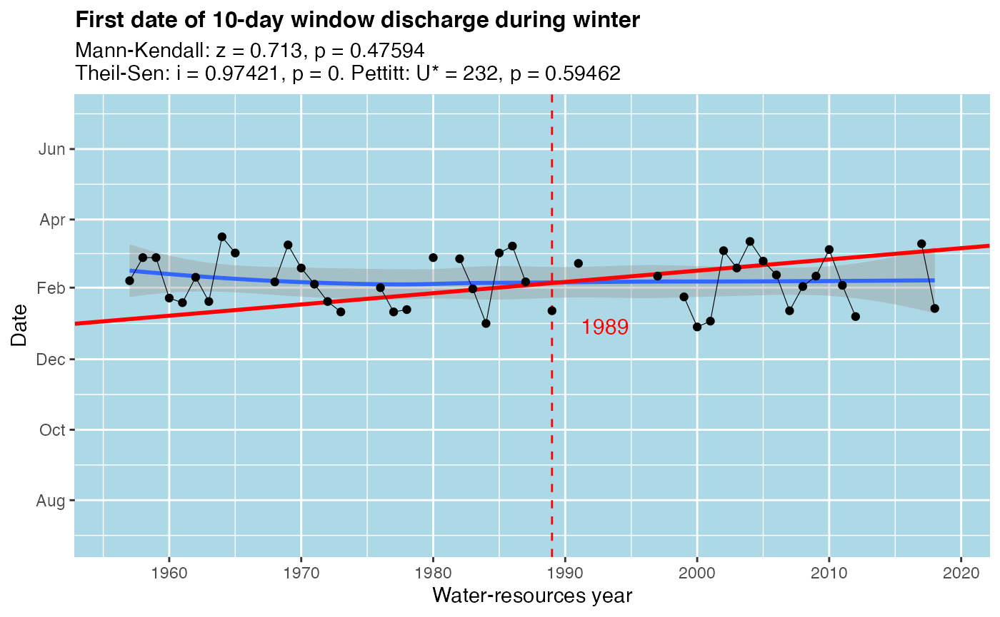
#> Warning: Removed 1 rows containing non-finite values (stat_smooth).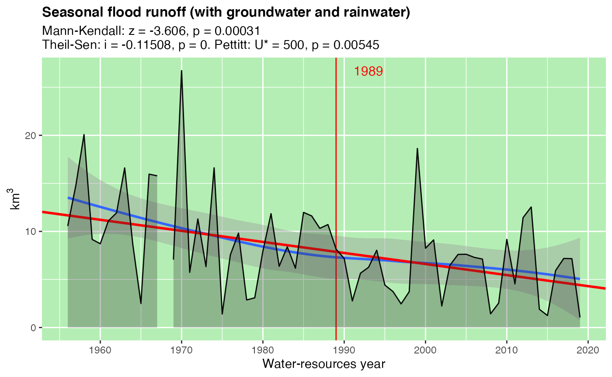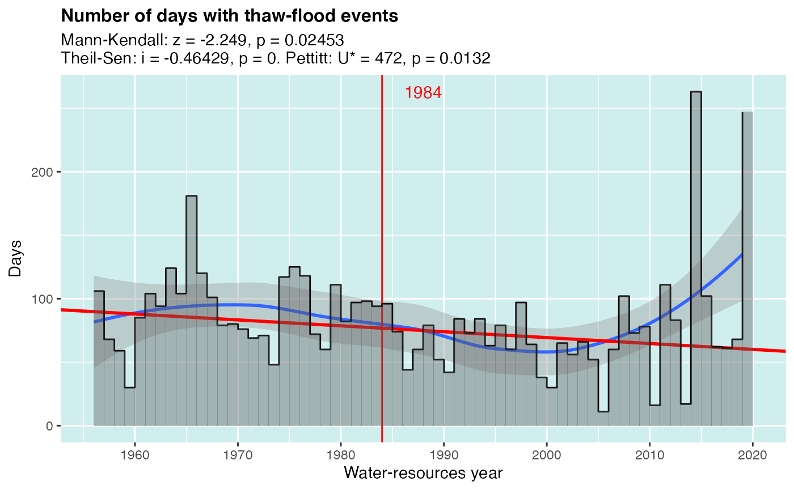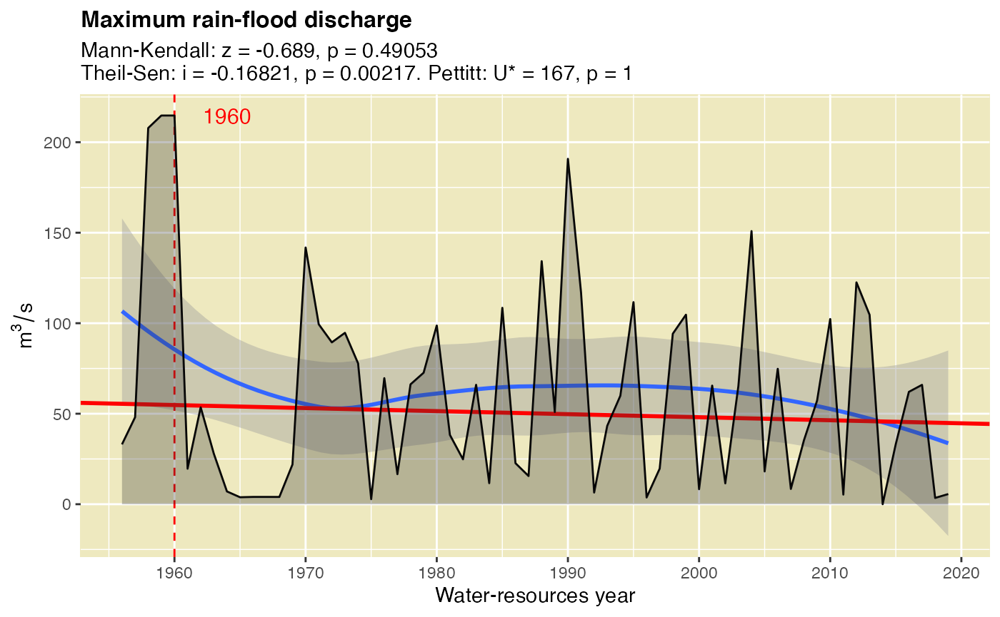
Note that
testsparameter ofplot_variables()expects the tests for the same variables as those selected for plotting. If you plot variables A, B, C and supply tests for variables X, Y, Z, they will be added without any warnings, and it is your responsibility to keep them in correspondence with each other
Finally, you can plot all variables by not supplying column names to plot_variables() function. In that case tests (if you want to plot them too) should also be calculated for all variables:
gr_plot_vars(vars, tests = gr_test_vars(vars))Plot long-term period changes
Long-term changes are the differences between summarized statistics of one variable calculated for two selected periods. Because these statistics reflect the differences in distributions of parameters, grwat visualizes them as box plots using gr_plot_periods() function. The syntax is similar to gr_plot_vars() except that you must provide either tests or year parameter. If both are supplied then tests is prioritized (you can also supply a fixed year when testing variables:
gr_plot_periods(vars, Qy, year = 1978)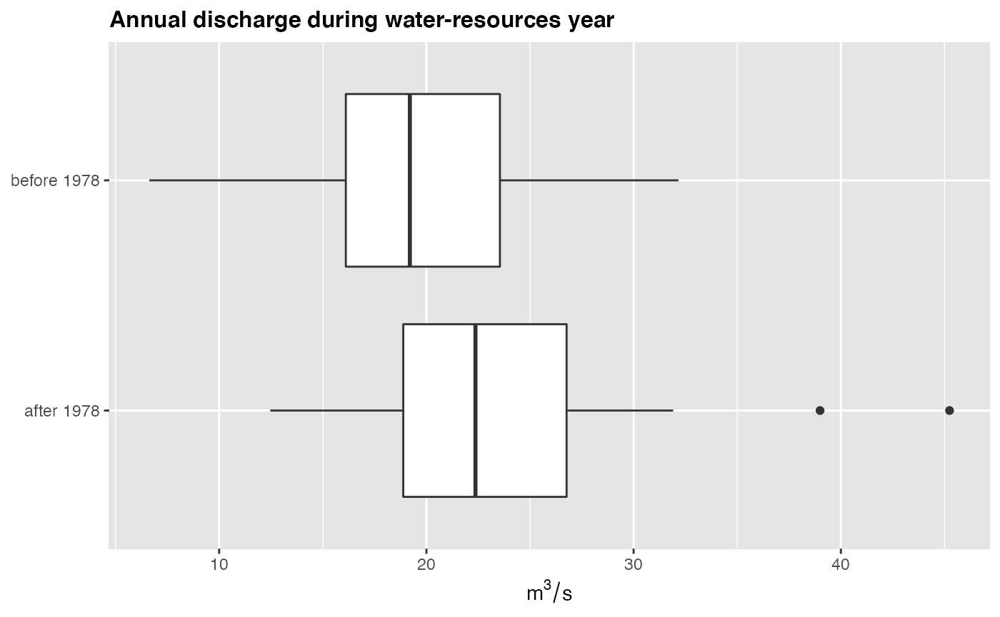
gr_plot_periods(vars, Qy, tests = gr_test_vars(vars, Qy))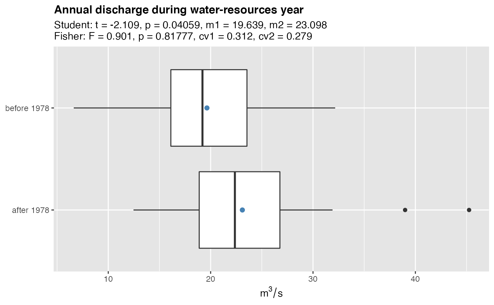
Multiple plots can be combined on one page using layout parameter:
gr_plot_periods(vars, Qy, Qmax,
tests = gr_test_vars(vars, Qy, Qmax),
layout = matrix(c(1,2)))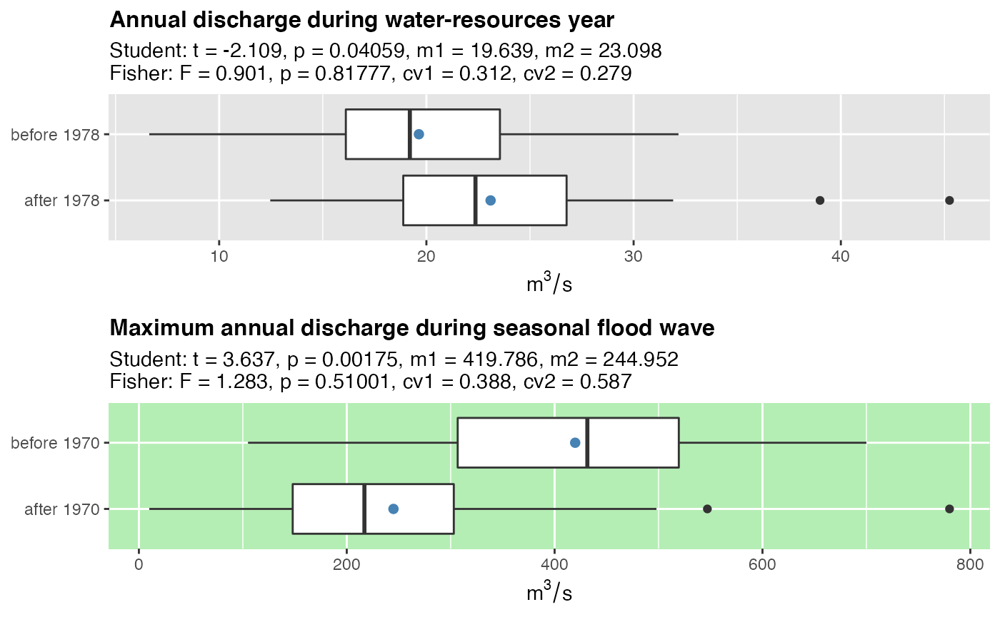
To plot long-term changes for all variables just skip variable names in function call:
gr_plot_periods(df, tests = gr_test_vars(df))There is also a small helper function that plots a histogram of minimal discharge month for summer and winter periods:
gr_plot_minmonth(vars, year = 1985)